< Previous
Next >
2014 -
Mazda6 -
Transmission/Transaxle
MANUAL TRANSAXLE SHIFT MECHANISM REMOVAL/INSTALLATION [C66M-R]
1. Disconnect the negative battery cable. (See NEGATIVE BATTERY CABLE DISCONNECTION/CONNECTION [SKYACTIV-G 2.5].)
2. Remove the shift lever using the following procedure: a. Remove the upper panel. (See UPPER PANEL REMOVAL/INSTALLATION.)
b. Remove the shift lever knob.
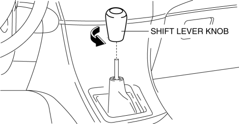
c. Remove the shift panel. (See SHIFT PANEL REMOVAL/INSTALLATION.)
d. Remove the side wall. (See SIDE WALL REMOVAL/INSTALLATION.)
e. Remove the rear console. (See REAR CONSOLE REMOVAL/INSTALLATION.)
f. Press the tabs on the control cable as shown in the figure and disconnect the shift lever from the control cable.
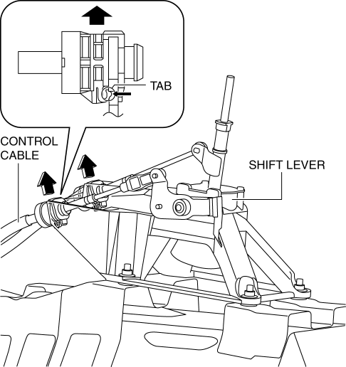
g. Disconnect the control cable end (shift side) from shift lever as shown in the figure.
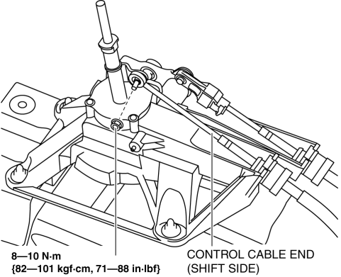
h. Disconnect the control cable end (select side) from the shift lever using the following procedure:
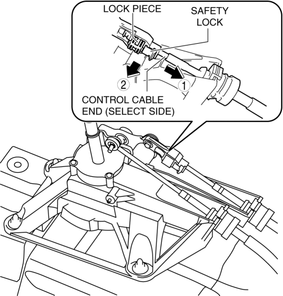
i. Press down the safety lock in the direction shown in the figure.
ii. Push out the lock piece in the direction shown in the figure.
iii. Disconnect the control cable end (select side) from the shift lever.
i. Disconnect the connector from shift lever as shown in the figure.
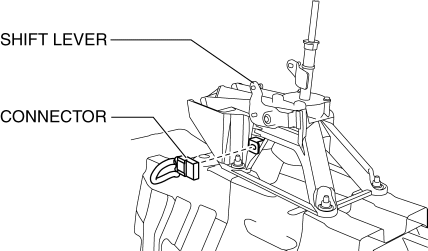
j. Remove the rear vent duct. (with rear vent) (See REAR VENT DUCT REMOVAL/INSTALLATION.)
k. Remove the shift lever.
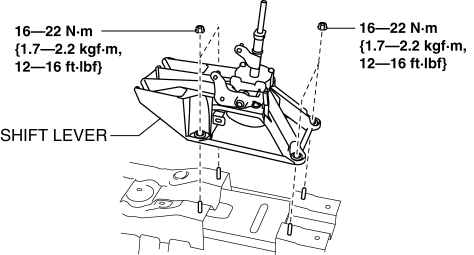
3. Remove the control cable using the following procedure: a. Remove the air cleaner component (air cleaner, air hose). (See INTAKE-AIR SYSTEM REMOVAL/INSTALLATION [SKYACTIV-G 2.5].)
b. Remove the battery component (battery, battery tray and PCM component). (See BATTERY REMOVAL/INSTALLATION [SKYACTIV-G 2.5].)
c. Remove the control cable end from the manual transaxle.
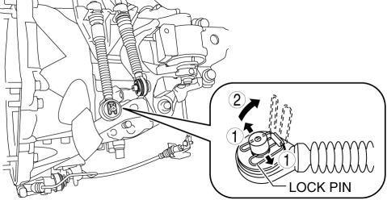
i. Pull the lock pin in the direction of the arrow shown in the figure and release the control cable end (manual transaxle side) lock.
ii. Remove the control cable end from the manual transaxle.
d. Press the tabs on the control cable and disconnect the control cable from the bracket.
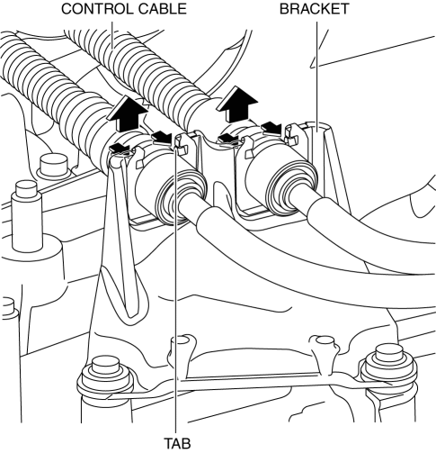
e. Remove the fastening nut for the control cable.
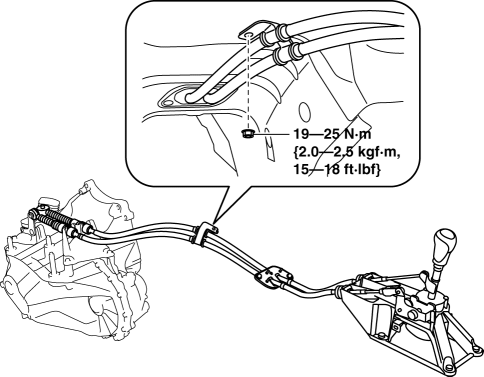
f. Remove the fastening nuts for the grommet.
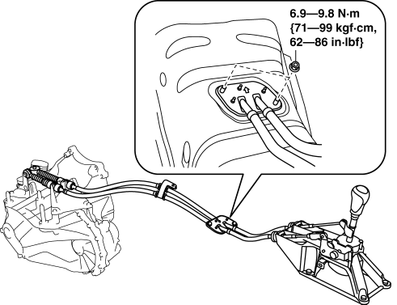
g. Remove the control cable.
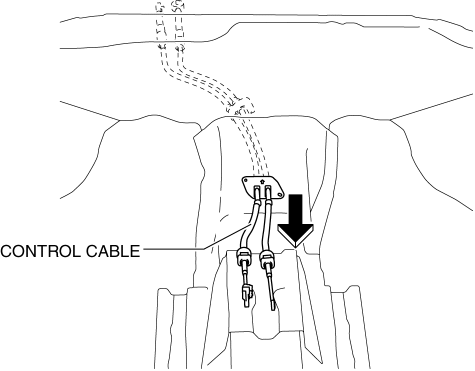
4. Make sure that the shift lever (manual transaxle side) is in neutral position.
5. Install in the reverse order of removal.
< Previous
Next >
© 2012 Mazda North American Operations, U.S.A.